图说棋理（攻杀篇）
#1 图说棋理（攻杀篇）作者：有志青年 发表时间：2008-9-7 13:00:28
清风[图说棋理]五子棋知识帖子目录ShowPost.asp?ThreadID=4541
图说棋理（攻杀篇一）“T”型杀
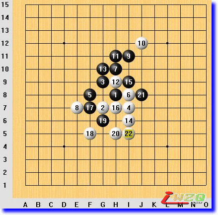
学五子棋除了学基础知识外，还应该学习基本杀法和布局理论。基本知识是入门，布局理论是如何合理布局最终产生必胜棋形，有了必胜棋形，我们需要的就是基本杀法了。可见，基本杀法就像足球中的“临门一脚”，是非常重要的。本篇向大家介绍“T”型的基本杀法。
本局无禁手规则，开局为中央浦月局。
当行棋至黑13的时候，因布局错误（错误原因暂不分析）给了白棋成杀的机会，白棋运用到了“T型杀”。
白14 i6 活三，黑15只能防 i9 ，否则白棋两步vcf（连续冲四最后成四三）。
白16 h7 冲四，黑17 f7 必须，这又给黑棋造成了对白12的重复防守，这是先活三后冲四这一次序的意义所在。至此白棋形成“T”字棋形。
以下就是此型成杀方法。注意：先下 f5 还是先下 h5 要看对方子力配置而定。
告诫五子棋爱好者：多记住几个必胜棋形比背大量棋谱更有意义。
以后我还会陆续给大家介绍一些必胜棋形和杀法。
#2 图说棋理（攻杀篇二）“工”字形杀 作者：有志青年 发表时间：2008-9-7 13:02:52
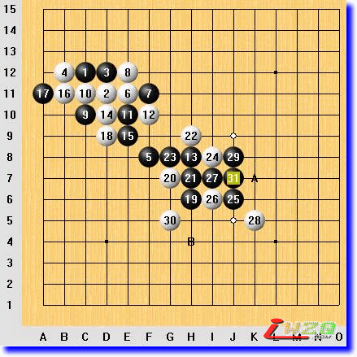
本篇再向大家介绍“工”字型的基本杀法。
本局无禁手规则，边角开局。
白20之后，黑棋开始总攻，运用到了“工字型杀”。
黑21、23两步活三，25示招同时带活二，至31形成一个完美的“工”字，无论白棋如何防守这个活三，黑都可以按AB的次序取胜。
注意：如果白棋防守J5，黑方不可先下B点，那样次序就错了。
告诫五子棋爱好者：多记住几个必胜棋形比背大量棋谱更有意义。
以后我还会陆续给大家介绍一些必胜棋形和杀法。
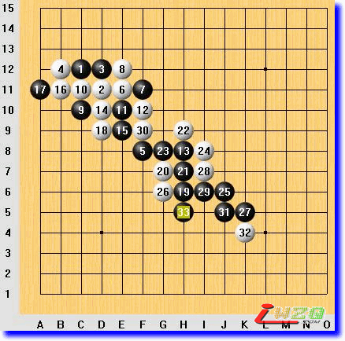
变化参考图1
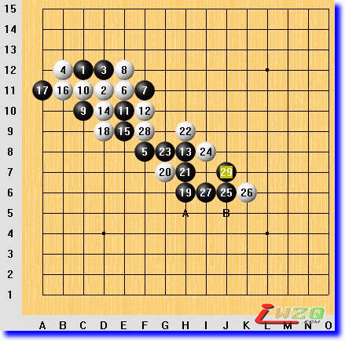
变化参考图2
#3 图说棋理（攻杀篇三）大三角 作者：有志青年 发表时间：2008-9-7 13:06:37
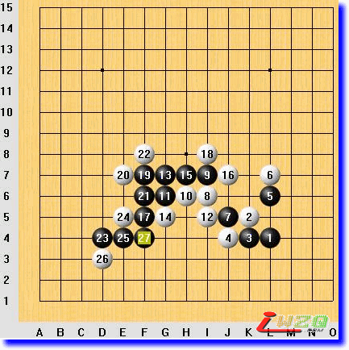
本篇向大家介绍“大三角”型的基本杀法。
本局无禁手规则，边角开局。
黑15活三，展开总攻，至黑21，形成一个以15、17、19为顶点的大三角，我们来学习这个大三角的基本杀法。
白22从上面挡黑棋的活三，黑23“引含成双”必杀；白22从下面挡黑棋的活三，黑棋VCT成杀（见变化参考图1）。如果白18从下面挡黑棋的活三，黑棋依然能形成大三角，白22从下面挡黑棋的活三，黑23继续活三，白24从上面挡，黑棋VCF成杀（见变化参考图2）；白棋使用先手从下面挡黑棋的活三，黑27防守后，上面有VCF，白棋不能活三，还需再防守，黑棋VCT成杀（见变化参考图3）。白22如果从上面挡黑棋的活三，黑棋23继续活三，白棋从下面挡，同时活三，黑25攻防兼备，上下都能胜（见变化参考图4）。如果白16从左面挡黑棋的活三，黑棋就不能成大三角了，黑棋杀法见变化参考图5、6、7。
以后我还会陆续给大家介绍一些必胜棋形和杀法。
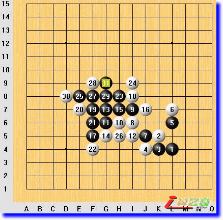
变化参考图1
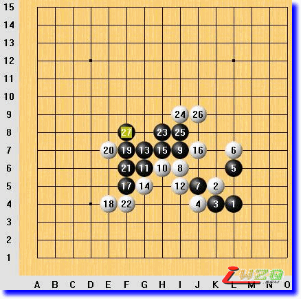
变化参考图2
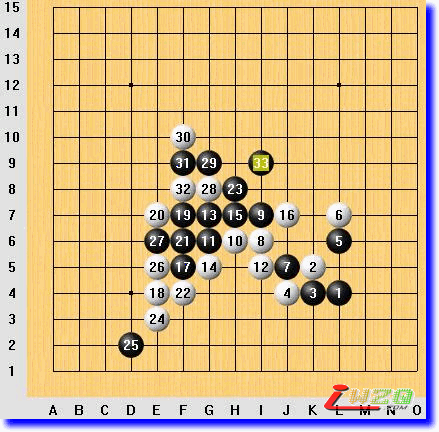
变化参考图3
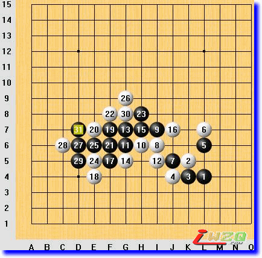
变化参考图4
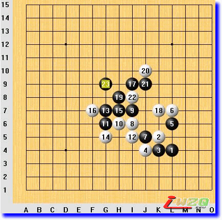
变化参考图5
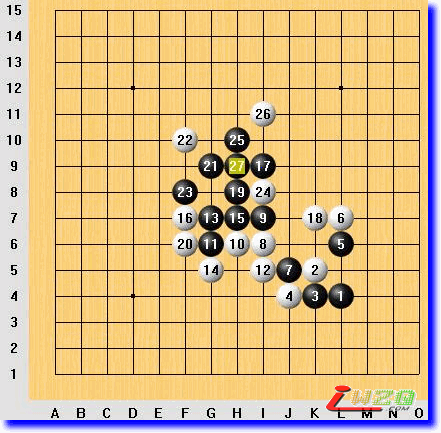
变化参考图6
变化参考图7
#4 图说棋理（攻杀篇四）巧解乘手 作者：有志青年 发表时间：2008-9-7 13:09:20
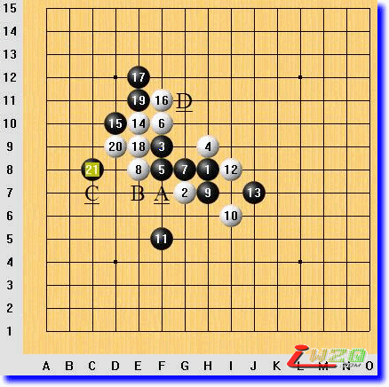
当发现在自己算好的VCT途中对方有乘手（即反棋，反三为三乘手，反四为四乘手）埋伏的时候，改变自己的行棋次序，使得在对方形成乘手的时候自己的进攻级别仍然高于对方，即可取胜。
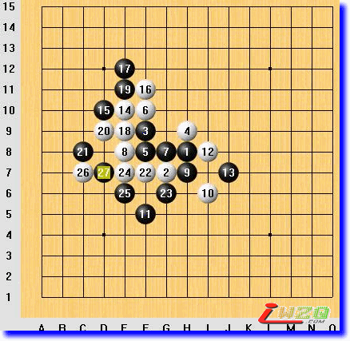
如图局势，如果白方按A、B、C的次序行棋，最后冲四活三的时候，对方防冲四形成四乘手，级别会高于白方的活三，白棋将无法取胜。
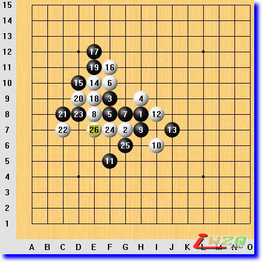
提高进攻级别的方法是按C、A、B或者A、C、B的次序，最后形成双冲四，进攻级别将高于对方而取胜。
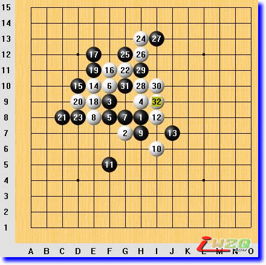
就本局来讲，先下D点也可以，这个活三是个“两头蛇”，如果黑棋挡上面，白棋在下面先形成双冲四，将先于对方同级别的活四而成五连；如果对方挡下面，白棋在上方可以实施VCF取胜。
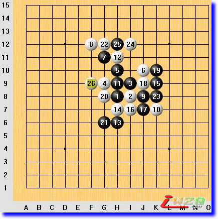
白棋22从上面开始动手，最后在f9成杀，避开了黑棋i6的三乘手
#5 图说棋理（攻杀篇五）双头蛇 作者：有志青年 发表时间：2008-9-7 13:12:04
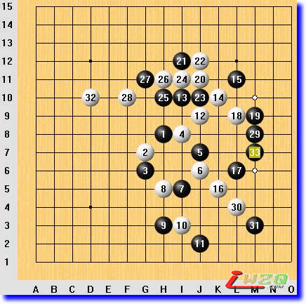
一个连活三（非跳三）之后，根据对方防守方向选择后续着法，使得对方无论防守哪一头己方都能使用vct以上级别的直接进攻而取胜，这样的活三称为“双头蛇”。
本局棋黑33即双头蛇，白棋防守上方，参见“变化参考图1”；白棋防守下方，参见“变化参考图2”。
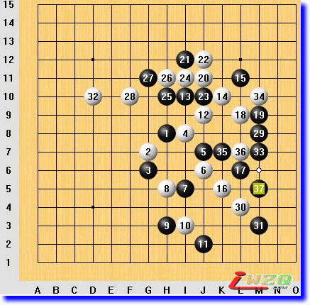
变化参考图1
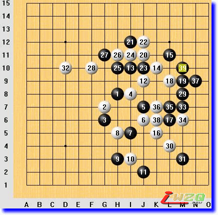
变化参考图2
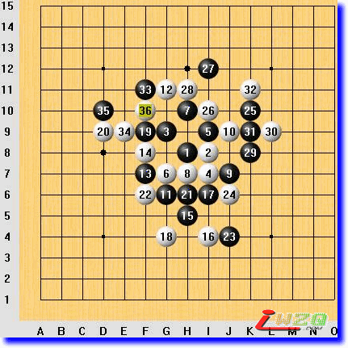
本局白36活三，黑37防守上方，左边白棋vct取胜；黑37防守下方，白棋在上面做一示一含，虽然不是vcf活vct，但棋进攻级别相当于vct，所以白36也是一步“双头蛇”。
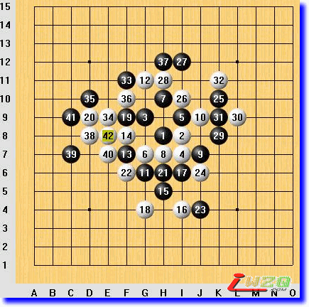
参考变化图1
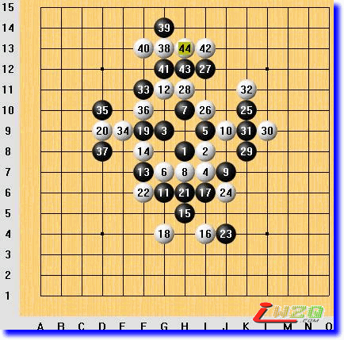
参考变化图2
#6 Re:图说棋理（攻杀篇）作者：超级菜鸟徒弟 发表时间：2009-2-20 17:12:50
要好好看看,仔细领会才行.
#7 Re:图说棋理（攻杀篇）作者：英雄九段 发表时间：2009-4-7 18:15:18
haohao xuexi tiantian xiang shang#8 Re:图说棋理（攻杀篇）作者：越狱行辕 发表时间：2009-4-7 20:05:37
好东西，，，#9 Re:图说棋理（攻杀篇）作者：忧郁的双眼 发表时间：2009-5-15 12:08:29
好怀念在逝水跟清风大叔学棋的日子
哎
现在逝水人去楼空
清风也转战无禁了